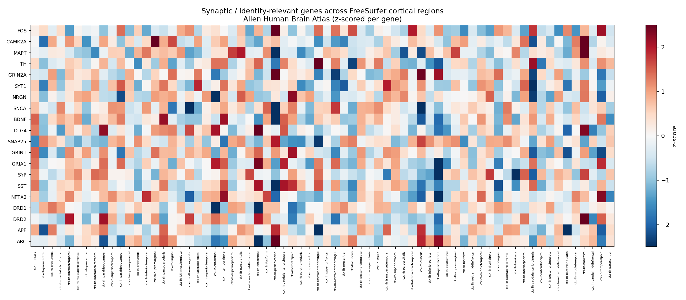

First, I show the mass at scale.
The tumor is not a symbolic circle. It has an uneven surface, a damaged center, swelling around it, and infiltrating edges that can affect nearby tissue.
Start with the tumor at real relative scale, then zoom outward and inward. The goal is to show that the disease is physical, spatial, and biological at the same time.
The tumor is not a symbolic circle. It has an uneven surface, a damaged center, swelling around it, and infiltrating edges that can affect nearby tissue.
The brain is part of a body. When neural circuits fail, the effects can show up as confusion, movement difficulty, sleep disruption, mood changes, speech problems, and loss of daily function.
Different regions do different jobs. The hippocampus helps form memories, cortical networks store and use knowledge, and basal ganglia circuits help select actions and habits.
Alzheimer's pressure appears early in entorhinal and hippocampal memory networks. Parkinson's begins from dopamine disruption that changes how action circuits learn from experience.
At the synapse, receptor traffic, calcium signals, vesicle release, tau stress, and synaptic injury markers help explain why the same disease can change both biology and lived experience.
In my presentation, I would not say one study proves the whole argument. I would say the argument gets stronger because different kinds of evidence point in the same direction.
A glioblastoma overview reports tumor diameter at diagnosis is usually around 4 cm, while older data show many cases can be larger.
Classic experiments show that synapses can change for meaningful periods, and that blocking NMDA-dependent plasticity can disrupt spatial learning.
In the supplied files, higher pseudoprogression scores were associated with steeper decline in memory, language, and overall cognition.
An SV2A-PET study of early Alzheimer's disease linked synaptic density with global cognition and multiple domains.
Patterned hippocampal stimulation improved a narrow visual memory task, without implying restoration of a life story.
I would be careful here: this is not a map of identity. It is a map of gene expression. The Allen Human Brain Atlas file connects 3,702 tissue samples from six adult donors to 68 cortical regions.
CAMK2A, GRIN1, MAPT, APP, SNCA, BDNF, FOS, and related genes do not share one identical cortical pattern. That supports the report's safer claim: identity-relevant biology is distributed across interacting systems.
The heatmap is a healthy reference and each row is scaled within its own gene. A hot color does not mark a region as more human; it marks relative expression within that gene's cortical distribution.

A brain tumor, Alzheimer's disease, and Parkinson's disease can all change lived experience, but they do it through different mechanisms: mass effect and infiltration, memory-network pathology, or dopamine/action-learning failure.
For a professor, I would emphasize the physical scale first. A tumor can occupy visible brain space, push or irritate surrounding tissue, and grow into nearby brain. The model shows the mass, the swelling zone, and the infiltrating edge separately.
The supplied SEA-AD file showed higher median local CPS in medial entorhinal cortex and hippocampus than in primary visual cortex. I would use that to explain why memory-network damage can appear early and feel personal.
Parkinson's begins from a different circuit problem: dopamine loss changes plasticity rules in basal ganglia and motor networks. That can affect movement, action selection, motivation, habit learning, and cognitive flexibility.
In the provided CSF table, SYT1 correlated strongly with p-tau181 and total tau, while SNAP25 showed moderate positive relationships. Higher CSF synaptic markers can indicate synaptic stress or injury, not healthier synapses.
This is where I would slow down. The science is exciting, but restoring a complete human memory would require knowing the cells, strengths, context, emotion, retrieval history, and surviving network state.
Near-term strategies are more plausible when they slow pathology, reduce inflammation, support synaptic maintenance, and strengthen remaining circuits.
Deep brain stimulation and hippocampal prosthesis studies show that targeted activity can change function, but benefits depend on timing, task, electrode position, and brain state.
Memory-altering or brain-recording technologies require strict consent, ownership, fairness, and dignity protections because neural information sits close to identity.
Synaptic plasticity is a central physical support for memory and personal continuity, but the self is not a single biological object. It is an emergent process involving whole-brain networks, the body, development, and relationships.